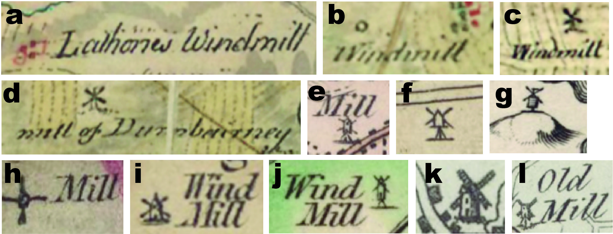

Project
Mills from Maps
No central register of early or post-industrial mills exists in Great Britain. Although it has been claimed that 10,000 to as many as 20,000 watermills existed throughout Britain by ~18001, this estimate was recently re-examined by our team.2 This database and viewer are partly informed by the work of earlier mill censuses3. From 2022-2023, mill locations were found by consulting high-resolution digitised scans of maps or, for more rare or fragile map editions, from the engraved originals held at the British Library.
Cartographic Sources
County Maps
Data from large-scale county maps were manually collected from maps surveyed and published between 1729‒1836 in Scotland, England and Wales. Maps are held in collections at the National Library of Scotland, the British Library, the National Library of Wales, the Wiley Digital Archive for the Royal Geographical Society (with the Institute of British Geographers), the National Library of France, the Digital Archive at McMaster University Library, the Yale University Library, and the David Rumsey Map Collection at the University of Stanford Library.
Note: You may notice that the early maps from which the data were derived are not shown in this viewer. This is mostly due to the distortion that is created when early maps are georeferenced, which reduces their legibility (see Accuracy and Georeferencing). For similar reasons, this is why mill locations may not exactly coincide exactly with locations shown on later Ordnance Survey (OS) maps in the viewer.
To view the scanned maps, please click on a mill record to bring up the record information and click on the 'Map Hyperlink' to open a separate webpage where the map can be viewed. In some cases, the data were extracted from paper map sheets that can be only viewed in the British Library.
The Roy Gazetteer
Data from 1747‒1755 were derived from the collaborative National Library of Scotland and British Library Roy Gazetteer project. That project involved transcribing placenames from Roy Military Survey of Scotland map sheets. We then derived raw mill locations and mill types from mill symbol or extract text from these maps via toponymy. Text in the Roy Gazetteer was queried for English and Scottish Gaelic terms for ‘mill’ and ‘mills’, allowing for several spellings and phonetic variations. This included but was not limited to such terms such as mill, miln, muileann, mhuillin, vulen, vuilin, vulan, voulin, mulen, mulin, and milton.
Text including words with geographic or topographic context were excluded if they i) were a duplicate location, ii) had no association with milling at that location at any point in the interval focused on in our project (c.1729‒1914)4, or iii) were found to exist at locations not typical for mills, such as at higher elevation or within permanently wet or boggy ground5. Locations associated with, but not limited to, words such as -burn, -town, -ton, -mains, -millgen, -scar, -craig, -crag, -pond and -dam and their plurals were removed from the dataset if no association as indicated above was found.

Figure 5. Example of 'mill' terms from the Roy Gazetteer . To identify potential mill sites from the Roy Military Survey Map, we used text search terms like 'mill' and 'mhuillan' to identify mill sites from the Roy Gazetteer. These terms also show up when referring to streams, such as 'Mill Burn', 'Millhill', or villages ('Achmill'). In these case of these sites, it was important to remove duplicate geographic text. Blue boxes = search hits from the Roy Gazetteer. Source: the Roy Military Map of Scotland. View map. ©The British Library Board
Cartographic Representation
Watermill Icons
Mills were most often represented by icon, sometimes with or without accompanying text clarifying the name, type or function of each mill. Of the more than 20,000 records in our database from county maps, over 70% of records are associated with icons. The icon of choice in this period to represent a watermill was a generalised waterwheel symbol, a circle with radiating spokes or vanes. Although watermills were the most common feature indicated with the waterwheel icon6, variations of this icon were also used to identify other locations with heavy use of waterpower, such as forges or places using water gins (engines).7

Figure 8. Example of watermill representation in 18-19th century county maps. Watermills were represented by either waterwheel (asterisk) symbol, text naming the mill, or depicted as a building or set of buildings, sometimes with or without water infrastructure. Sources: (1) King's 1806 map of the country surrounding Belvoir Castle (undigitised map held by the British Library); (2) Jefferys' 1775 map of Bedford (undigitised map held by the British Library); (3) Walker's 1835 map of Derbyshire(undigitised map held by the British Library); (4) Jefferys' 1771 map of Yorkshire (digitised map in the McMaster Digital Archive); (5) Highlands map sheets for Fifeshire, Roy Military Survey of Scotland. View Russles Mill on Roy map.
Even in the absence of a clear waterwheel icon, watermills were commonly depicted with their supporting water infrastructure. Either using a simple inked line or even a detailed watercourse, weirs and mill lades were shown to convey water to a mill and return water back to the river by a mill- or tail race. Commonly, mill lades were shown connected to mill ponds that helped mitigate the natural irregularity of river waterpower.
Figure 9. Mill lades in county maps. While many watermills are depicted with waterwheel symbols and lades, not all are shown as waterwheels or with lades. Lades providing water for the Mill of Balburney, Mill of Ardatt and Mill of Kinnaird are variably depicted depending on the detail of the survey and style of map. Sources: (a) the Royal Military Survey of Scotland, (b) Burdett's revised 1791 map of Derbyshire, and (c) Stobie's 1783 map of Perth and Clackmannan.
Figure 10. Mill dams on county maps. Small to large dams were depicted routinely by surveyors in the (a) Roy Military Survey and to b) county maps surveyed in the first quarter of the 19th century. Sources: (a) Peppermill Dam (Paper mill Dam) on the Roy Map and (b) Bryant's 1831 map of Cheshire.
Text representation
Records with accompanying or standalone text make up ca. 40% of all records in the database. In most cases, this was simply the name of the mill or affirmation that the icon depicted a ‘mill’ site. In a small proportion of records (6%), text was descriptive enough to identify the mill type and, more rarely, the mill function e.g., whether it was a corn (grain) mill, silk mill or fulling mill.

Figure 11. Text describing the type of processing at mills in 18-19th century maps. A waake (waulk or fulling) mill in Roy’s Military Survey in Aberdeenshire, (b) Corsley (Crosslee) Cotton Mill in Ainslie’s 1800 map of Renfrewshire, and (c) a lint (flax) mill south of Dunscore in Crawford’s 1804 map of Dumfries. The first two are indicated with a mill lade and tail race. Note that while all mills were likely water-powered, they are not represented by the common waterwheel icon.
Position relative to rivers
Watermills are fundamentally dependent on waterways. They extract, and then return, a portion of moving water directly from a stream or a mill pond to drive machinery conducting mechanical work. In most cases, this requires either a location on or within a practical distance of a river to assure regular access to water and to reduce the overall cost and maintenance of infrastructure needed to supply water to the mill. Because of this fundamental relationship, the proximity of British watermills to rivers has been suggested to range no more than 500 metres horizontal distance from the river for watermills, and often much closer (<275 metres)8.
The physical geographical relationship between watermills and waterways helps to further identify additional possible watermill sites from records in our database with ambiguous symbology and without descriptive text. In the case of some cartographers, mill locations were labelled simply as ‘mill’ by text, sometimes with an inked-in building icon or open circle.
Figure 12. Example of mills shown as buildings. Various mill sites were shown as buildings by early map-makers in both rural and more urban settings. The proximity of ambiguously labelled mill icon to rivers might suggest they relied on waterpower as a motive power, at least at some point in the site’s history. In some cases, independent evidence indicates that significant waterpower was used at that location. For example, at (d), water was used by Jedediah Strutt in his cotton mills established at Belper. The generic building icons used for the mills at Belper do not indicate this even by ca. 1791, even though classic waterwheel icons are used elsewhere on the same map to indicate other watermill sites. Was this a mistake? Or does this highlight the evolving view held by some contemporary individuals about early water-powered cotton mills as entirely different entities to ordinary watermills? Even Sir Richard Arkwright’s mills at Cromford are similarly depicted to Belper. Sources: (a) Ross' 1777 map of Dumbarton; (b) Ainslie's 1775 map of Fife; (c) Thomson's 1827 map of Fife; and (d) Burdett's revised 1791 map of Derbyshire.
Nearly one-fifth (~20%) of all ‘mill’ text records in our database are ambiguously annotated with regards to the motive power employed. To identify those which may have been assisted by waterpower, we used their horizontal position relative to the river network to classify possible watermill locations in a GIS framework.9
If all records are compared to their distance from waterways, it appears that most ambiguously labelled ‘mills’ were more likely to be powered by water based on their position relative to rivers.
 for each major mill type with their distance from rivers (horizontal axis)")
Figure 13. Type of mill versus mill distance from waterway. For each major mill type, we compared the number of records (vertical axis) to their mapped distance from rivers (horizontal axis). Notice how the records marked with a waterwheel closely plot together, with many records clustered less than 100 metres from a waterway. In contrast, note how windmills can be both close and very far (> 500 metres) from a waterway. How do 'mill' icons compare to watermills (waterwheel) and windmills?
At a first glance, this would make sense. Windmills were common landmarks used by surveyors for navigation and triangulation, because they were easily recognisable from a distance.10 Yet our data also highlight that any mill type could be located close to a stream. However, windmills were more often sited far away from water (>>150 metres), and most watermills clearly represented with a waterwheel icon were located much more closely. Such an observation suggests that many of the ambiguous 'mill' records may very likely be watermills.
This prompts questions around the use of the word ‘mill’ versus ‘watermill’ by particular surveyors. Was the contemporary meaning of mill during the 18th and early 19th century synonymous with watermill? Even if a surveyor did not indicate each type of mill individually by symbol, as some clearly did, watermills would have been easily recognisable by their external infrastructure (mill ponds, lades and races) from a moderate distance even if the waterwheel was also not visible. Mills powered by animal or human muscle externally appeared much like other buildings, if tending to have round or octagonal plans.11 The exceedingly few records of 'horsemill' or 'horse gin' in the database is likely not representative of their total scarcity (see The problem of drainage and threshing mills), but instead supports the idea that animal-powered mills were either unintentionally overlooked by surveyors or were not important enough to indicate on maps commissioned for their private subscribers.
Windmill Icons
Windmills were similarly represented by text and symbol, and rarely were differences to form or function consciously differentiated by map-makers. An exception to this is documented by William Yates and his map of Lancaster (1786) where two different symbols for windmills were used: one resembling a tower mill and one an open trestle post mill.12 By far and large, however, most symbols resembled post mills or simple buildings with wind sails. Depiction of windmills in the Roy’s ‘Great Map’ and early county maps appear very similar to those documented in the OS Old Series.13

Figure 14. Examples of windmill representation in 18-19th century maps. Windmills were more often marked by text in Roy's 'Great Map', like the (a) Lathones Windmill and (b) unnamed windmill near Inverkeithing in Fife. Occasionally, both text and symbol were used, such as at (c) an unnamed windmill in Haddingtonshire, and at the (d) Mill of Dumbairney in Perthshire. County maps display a wide array of windmill symbols but it does not appear commonplace to depict different types of windmills individually, such as might be the case in some areas of Yates' 1786 map of Lancashire and in limited maps by other map-makers. (e) Windmill from Bryant's 1828 map of Lincolnshire. (f) Windmill from Jefferys 1768 map of Durham. (g) Windmill on a hill from Armstrong & Armstrong's 1771 map of Berwickshire. (h) Windmill, labelled as 'mill', in Burdett’s 1791 map of Cheshire. (i) Windmill, indicated by a labelled building with sails, from Blackadder's 1797 of Berwickshire. (j) Windmill on Thomson's 'Berwickshire' from 1821. (k) New Mill and (l) Old Mill from Yates' 1786 map of Lancashire.
The Problem of Drainage and Threshing Mills
We note that many windmills acted as pumps for drainage and that many farms used animal- and water-powered threshing mills to remove the husks from grain. Accurately determining the number and distribution of both drainage mills and threshing mills has been a long-vexed issue. For drainage mills, it has been suggested this is primarily due to the inconsistency in which surveyors depicted types of windmills, as documented well in the OS Old Series, and the OS 1st and 2nd edition maps in several cases.14
It is clear from our data that county surveyors rarely differentiated windmills except in very rare instances. The low total number of drainage mills (n=47) within our entire dataset further supports this assumption. Future scrutiny of ‘windmills’ along fenland drainage canals would likely demonstrate that many ‘windmills’ are drainage mills.
For millennia, threshing was conducted by hand with flails before the invention and patent of a mechanised grain thresher by Andrew Meikle in 1788. The technology was taken up quickly in Scotland, and northern England by the turn of the 19th century but much more slowly in the Midlands and SE England.15 Despite such popularity in the north, maps do not appear to their document their growing use. Threshing mills were rarely indicated in the one- to four-inch county maps consulted as part of this project and viewer. Exceedingly few threshing mills were indicated even in the detailed six- and 25-inch OS 1st and 2nd edition maps of Scotland, which were conducted more than half a century later.16
We suggest that the underrepresentation of threshing mills in county maps is likely due to: i) water-powered threshing machines were adopted late or not at all during the period over which county surveys were undertaken; ii) the scale of mapping inhibited depiction of threshing mills, including horse gins, at small farm steadings otherwise more feasible on larger-scale OS maps and estate plans; iii) intentional omission by surveyors because private funders and subscribers were wealthy, often elite individuals who owned fewer threshing mills and/or were potentially less interested in any type of threshing mill; and/or iv) by unintentional omission during survey.
Notes
- Reynolds, T., 1983, Stronger than a hundred men: a history of the vertical water wheel: Baltimore: John Hopkins University Press, 453 p.
- Our recent work on cumulative mill sites suggests that no more than ~15,500 mills were active by the early industrial period, with likely fewer than this number active in Britain.
- Kanefsky J., 1979, The diffusion of power technology in British industry: University of Exeter [PhD Thesis], 583 p.; the Scottish Water Mills project
- Jonell, T.N., Jones, P., Lucas, A., Naylor, S., 2024, Limited waterpower contributed to rise of steam power in British ‘Cottonopolis’: Proceedings of the National Academy of Sciences Nexus, doi: 10.1093/pnasnexus/pgae251.
- Many historical and physical geographers, such as W.H.K. Turner and John Shaw, gently insinuated in their work that British mills were not sited in upland regions (>300 metres above sea level), but none ever conspicuously addressed or commented further on this observation. In our work recording tens of thousands of mill sites, we find that few mills of any type were historically sited above 300 metres sea level or in permanently wet/boggy areas like peat-, moor-, or fenland. See, for example: Turner, W.H.K., 1958, The significance of waterpower in industrial location: some Perthshire examples: Scottish Geographical Magazine, 74, 2, pp. 98-115; Shaw, J., 1984, Water power in Scotland, 1550‒1870: Edinburgh, John Donald, 606 p.
- Smith, D., 1989, The representation of non-extractive industry on large-scale county maps of England and Wales 1700-c.1840: The Cartographic Journal, 26, pp. 134-147; Bishop, P., 2021, OS mapping of water mills: Sheetlines, 120, pp. 11-35; Smith, D., 1990, The representation of industry on large-scale county maps of England and Wales 1700-c.1840: Industrial Archaeology Review, XII, 2, pp. 153-177. For an exhaustive investigation of windmill representation on early Ordnance Survey maps, see: Bignell, B., 2013, Mapping the Windmill: London, Charles Close Society, 307 p.
- Some research suggests that each waterwheel symbol represented an individual waterwheel rather than any one mill. In our research, we find this certainly was the exception rather than the norm for cartographers. Comparing possible mill numbers obtained from early maps to nineteenth factory inquiries for the textile industries suggests that a far greater number of waterwheels were in operation than represented by county maps, even if we make generous assumptions for overlooked mill sites by early surveyors. We further find it unlikely that surveyors in the field entered every mill to ascertain the number of waterwheels, especially when waterwheels came to be enclosed in buildings rather than mounted on the outside of buildings in some industries.
- Bishop, P. and Muñoz-Salinas, E., 2013, Tectonics, geomorphology and water mill location in Scotland, and the potential impacts of mill dam failure: Applied Geography, 42, pp 195-205; Jonell et al. (2024).
- To assess which sites may have utilised waterpower, we filtered ambiguous ‘mill’ records using a 275-meter buffer adapted after Bishop and Munoz-Salinas (2013) on either side of the river network. We believe this overestimates the total number of watermills based on results shown above. Mills falling inside the buffer were noted as possible watermills. To read the detailed methodology and how we conducted this analysis in QGIS, please see Jonell et al. (2024) in Explore More.
- Smith (1990).
- Ordnance Survey mapping indicates various styles of animal and water-powered threshing mill buildings. See Bishop, P., 2022, OS 25-inch mapping of threshing mills in Scotland: Sheetlines, 123, pp. 7-25.
- It is unknown if this accurately portrayed the two Kirkham windmills when Yates surveyed the area before 1780. It has been said that Yates used Kirkham/Glebe/’Old Mill’ (indicated like a post mill) on Carr (Mill) Hill as a triangulation station for his survey, which might suggest he would represent it correctly in his notes. Yates’ so-called ‘Old Mill’ was eventually rebuilt in 1812 (as a brick tower mill) and still exists today. Yates’ ‘New Mill’ (indicated like a tower mill) became ‘old’ by the six-inch OS survey in 1844/1845 and was demolished sometime before the revision in 1892.
- Bignell (2013), p. 72.
- Bignell (2013), p. 31.
- MacDonald, S., 1975, The progress of the early threshing machine: The Agricultural History Review, 23, 1, pp. 63-77.
- Bishop, P. (2022).